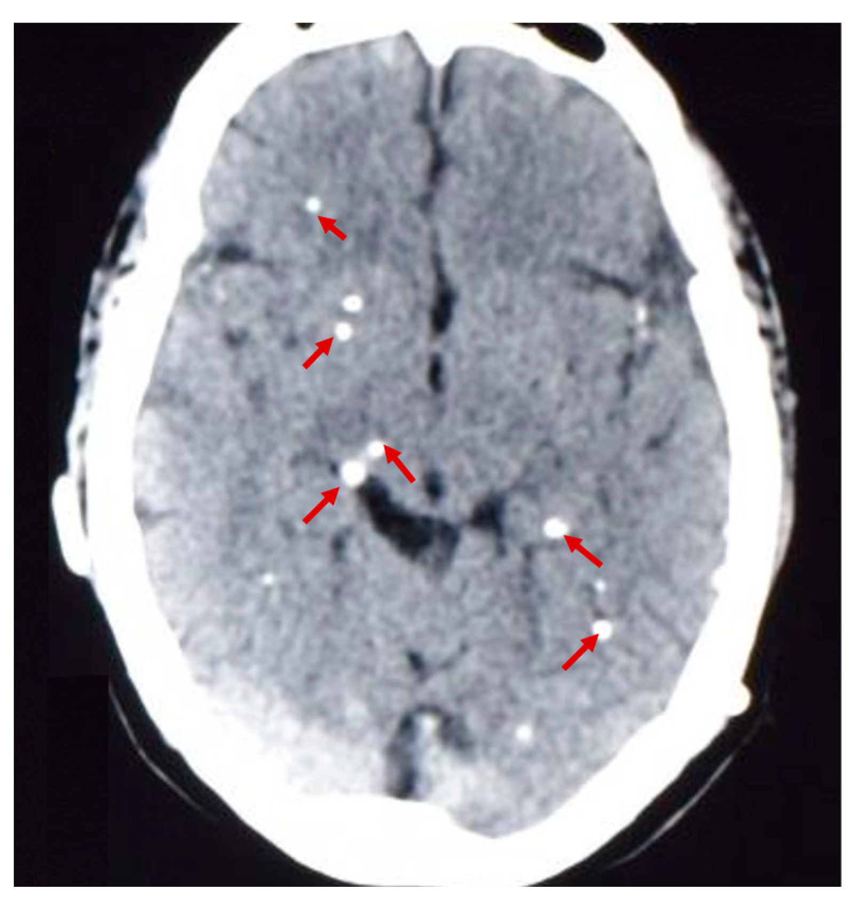

Epilepsia em três vias — o que uma crise única não prova
Até 10% das pessoas no mundo fazem uma crise na vida — e a maioria nunca repete. O número quebra a intuição “teve crise = epiléptico” e abre as três vias.
1. Via 1 — duas crises, intervalo que conta
Definição operacional central: pelo menos duas crises epilépticas não provocadas, com intervalo acima de 24 horas entre elas. Uma crise única não necessariamente define epilepsia. Crises no mesmo dia contam como um evento para esse critério.
2. Via 2 — uma crise + risco >60% / lesão
Segundo caminho: uma crise não provocada com chance de recorrência maior que 60% — a iminência estatística de repetir também autoriza chamar de epilepsia. Como estimar: investigar etiologia e achar lesão cerebral compatível com a crise → foco epileptogênico bem demarcado. Raciocínio prático: achou foco compatível → “ele vai voltar a fazer”.
Exemplo: paciente na emergência após crise tônico-clônica generalizada; investigação revela cicatriz de neurocisticercose (calcificações no parênquima). Manifestação mais clássica de NCC: a crise. Crise + lesão epileptogênica compatível → alta chance de repetir → crise única tratada como epilepsia. Crise única + investigação completa sem achado etiológico → não epiléptico por esse critério.
3. Via 3 — síndrome epiléptica
Terceiro caminho: encaixe em síndrome epiléptica — sinais e sintomas com crise característica, perfil epidemiológico, EEG e manifestações associadas características. Se o paciente se encaixa nesse “nicho”, também se faz o diagnóstico. Na prática, síndrome costuma implicar mais de uma crise — reforça as vias anteriores.
4. Os 10% e o que a definição recusa de vago
Estima-se que até 10% da população mundial é capaz de fazer uma crise epiléptica ao longo da vida, nunca mais repetir, e sem motivo descoberto — argumento-chave de que crise única ≠ epilepsia.
A definição não se contenta com a fórmula vaga “manifestações neurológicas agudas, transitórias e que recorrem”: precisa dos critérios operacionais (não provocada, contagem, intervalo, risco, síndrome).
Objeto-âncora: epilepsia = ≥2 não provocadas com intervalo >24 h · ou 1 + risco >60%/lesão · ou síndrome epiléptica.
| Via | Critério | Exemplo |
|---|---|---|
| 1 | ≥2 crises não provocadas, intervalo >24 h | Duas crises em dias diferentes |
| 2 | 1 crise não provocada + risco de recorrência >60% (lesão/foco) | TCG + cicatriz de NCC calcificada |
| 3 | Encaixe em síndrome epiléptica (clínica + epidemiologia + EEG + associados) | Nicho sindrômico definido |


Quiz · P3 2 perguntas · resposta com feedback
Q1. Paciente com uma TCG, TC com calcificações parenquimatosas de NCC, sem outra causa aguda. Diagnóstico de epilepsia:
Q2. Intervalo entre duas crises não provocadas para contar como via 1: